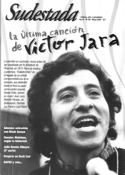

Buscar
Metáforas
Diez años atrás, en Cutral Có, una pueblada conmovía al país. La privatización de YPF, el cierre de fábricas, el aislamiento...
Edición N° 58
Mayo 2007
Revista bimensual
Comprar edición impresaSumario
- La última canción de Víctor Jara
- Metáforas
- Malvinas: la guerra y la viñeta
- Julio Ramón Ribeyro (2º parte)
- Respirar en Dock Sud
- Black Amaya: el último baterista
- El Salvador: La guerra de la krisis (2º parte)
Compartir Articulo
Diez años atrás, en Cutral Có, una pueblada conmovía al país. La privatización de YPF, el cierre de fábricas, el aislamiento, la ausencia de alternativas, había dejado un tendal de pueblos fantasmas disgregados por la Patagonia que, de golpe, dejaban a miles de personas sin trabajo y sin recursos para sobrevivir. Entonces un pueblo se levantó para dejar oír su voz. Con la ruta como escenario, se enfrentaron a gendarmes durante varios días, y fueron dueños del pueblo, y resistieron, y se miraron las caras y esperaron. Hubo palos, balas, gases y ninguna solución.
Neuquén era (y sigue siendo), la provincia argentina con mayores recursos hidrocarburíferos. Por ese elemento, fue la cabecera de playa para el desembarco de uno de los gigantes petroleros multinacionales más importantes, que impuso condiciones para explotar, barrió con todo aquello que pudiera perjudicar su dinámica de saqueo de recursos naturales y trabajó con habilidad para negociar en la mesa con políticos serviles a sus intereses, bien recompensados ellos por sus servicios. Neuquén era (y sigue siendo) un símbolo de la impunidad, del saqueo, de la injusticia, en un país entrenado en esas pericias.
Allí, mientras Repsol multiplicaba sus beneficios sin arriesgarse a la exploración y el gobierno provincial cobraba cuantiosas regalías a cambio de favores oportunos, los mapuches de Loma de la Lata se enfrentaban cara a cara con la policía para oponer a la explotación demencial y contaminante de las riquezas, su derecho a vivir en un ambiente sano y su propiedad ancestral sobre aquellas tierras. Palos y gases para ellos, también.
También en Neuquén, en medio de una crisis que amenazó con arrasar cualquier emprendimiento productivo, un grupo de trabajadores de la fábrica de cerámicas Zanon decidió tomar las riendas de su destino, y empezar a dibujar una historia propia, sin patrones y de frente a una quimera para una gestión obrera: recuperar la fábrica, ponerla a producir, crecer desde el vacío y multiplicarse. Lo hicieron, pero la amenaza del desalojo sigue latente (un equipo de Sudestada viajó a la fábrica para reflejar el esfuerzo cotidiano de sus trabajadores, en un informe que publicaremos en la edición de junio de la revista).
Hoy Neuquén vuelve a ser noticia: la misma impunidad, los mismos uniformes, los mismos cómplices, un muerto, un reclamo. Una provincia que sigue ofreciendo, cada tanto, metáforas de un país que espera, todavía, una alternativa real, un proyecto revolucionario.
En medio del circo electoral que se viene, con su larga lista de miserables, mercenarios y oportunistas que se asoman por los carteles callejeros, es bueno reafirmar una vez más esta ausencia crítica. Y repetir, en todo caso, una vez más, que las soluciones para los problemas de la gente están lejos de las oficinas de gerentes explotadores, uniformados con licencia para matar y candidatos listos para ofrecer complicidades en cómodas cuotas.
Comentarios

Sudestada
El colectivo de Revista Sudestada esta integrado por Ignacio Portela, Hugo Montero, Walter Marini, Leandro Albani, Martín Latorraca, Pablo Fernández y Repo Bandini.
Articulos más vistos


LIBRERÍA SUDESTADA

Colección infantil

Distribuidora de Libros

Suscripción

Sudestada en URUGUAY

Otros articulos de esta edición
Malvinas: la guerra y la viñeta
La guerra de Islas Malvinas también se peleó en el cómic. De Billiken a Humor, pasando por Fierro y Pucará, ...
Julio Ramón Ribeyro (2º parte)
Escritor de culto en su país, hoy la crítica lo reconoce unánimemente como uno de los mejores cuentistas hispanoamericanos. Julio ...
La última canción de Víctor Jara
Cantor popular, compositor, director teatral, miembro del Comité Central de las Juventudes Comunistas. Víctor Jara fue uno y todos al ...
Black Amaya: el último baterista
Fue parte de Pescado Rabioso, de Billy Bond y la Pesada, y de Pappo's Blues, entre otras bandas, a lo ...
 En la calle
En la calle
Respirar en Dock Sud
Los vecinos del Docke están sitiados por un ejército de polución, chimeneas y silencios cómplices. En Villa Inflamable, al pie ...
El Salvador: La guerra de la krisis (2º parte)
Segunda y última parte de esta mirada cronológica sobre la guerra civil en El Salvador. Desde el origen del Frente ...